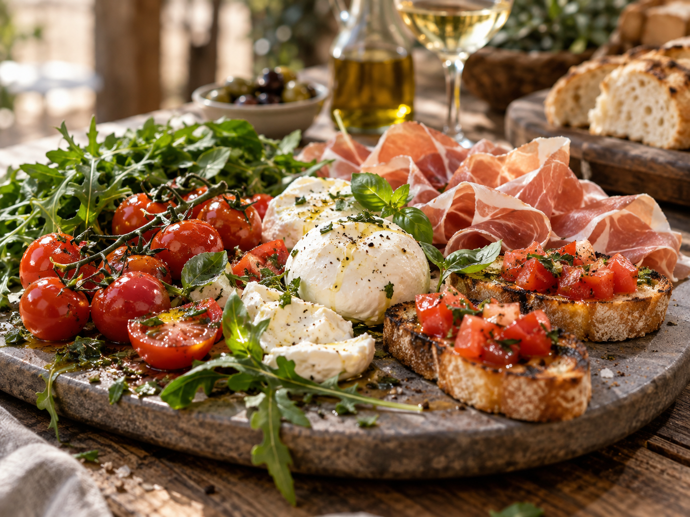
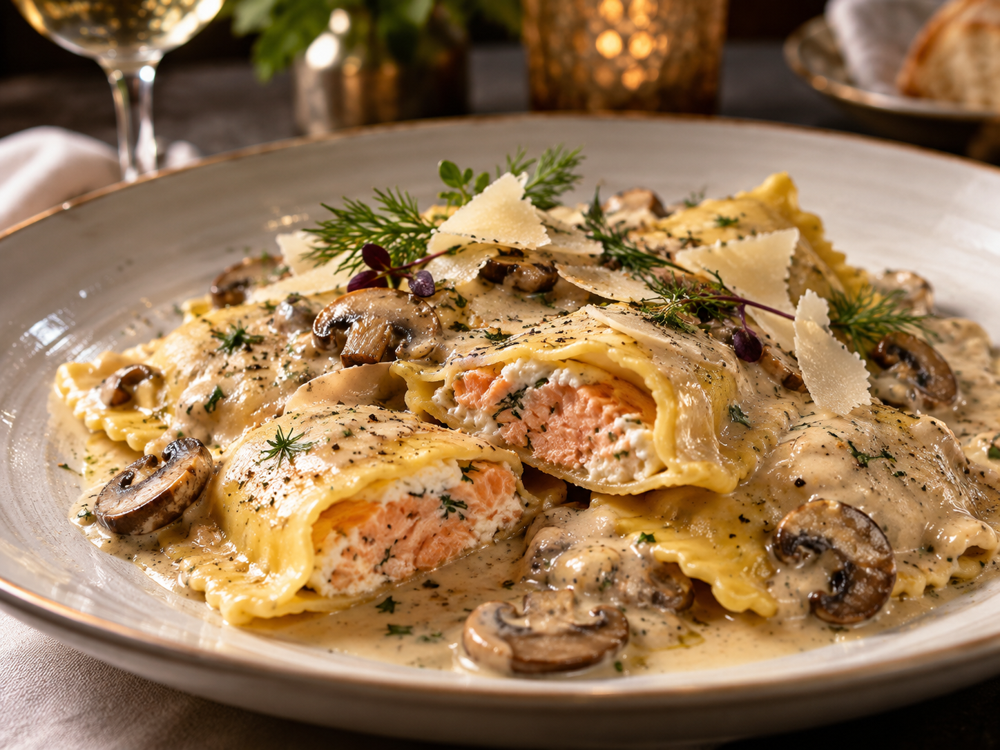
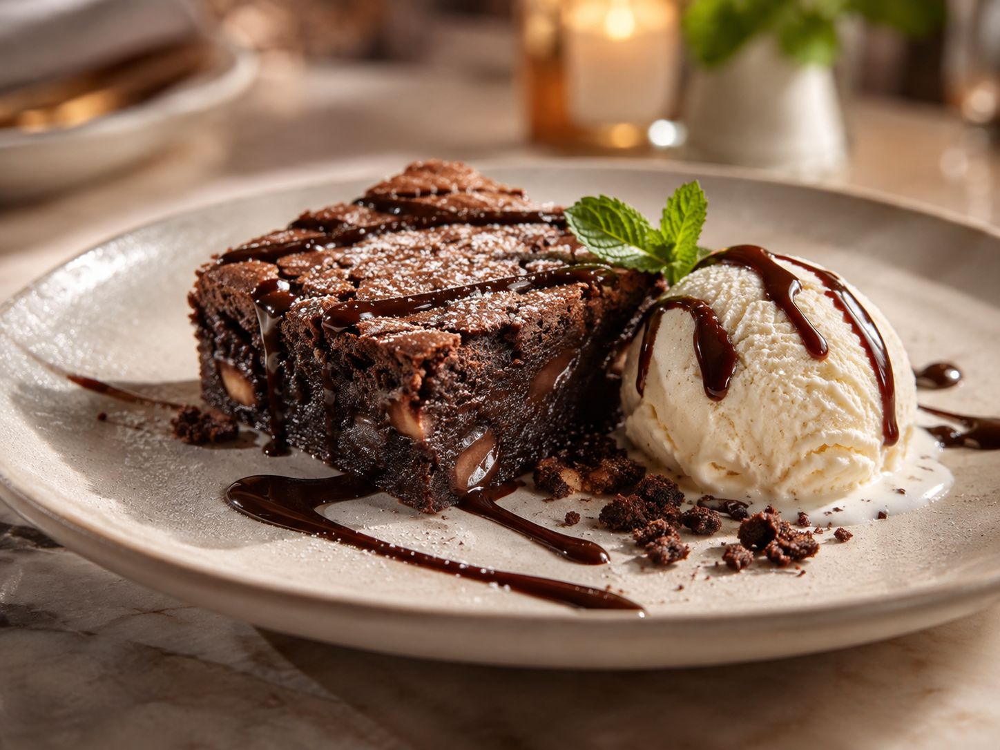
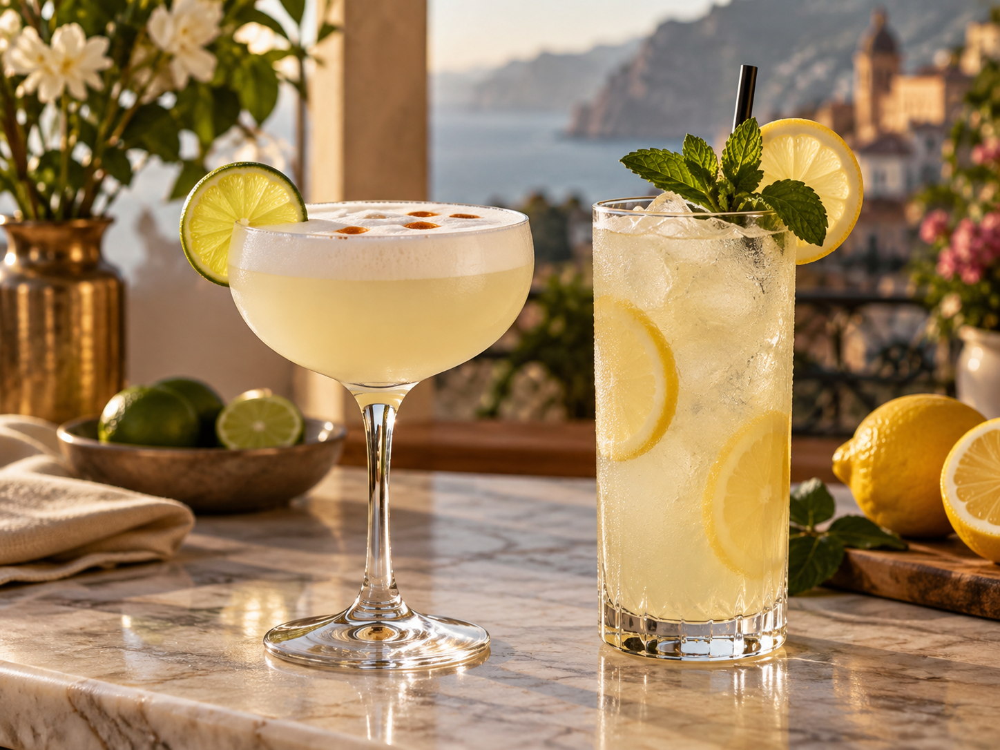

I · Antipasto
Amore al primo morso
Tomates, rúcula, prosciutto, mozzarella y bruschetta.

AntipastoII · Plato de fondo
Salmone nel Bosco
Pasta rellena de salmón con ricotta y salsa de setas con crema.

Il piatto principaleIII · Postre
El pecado permitido
Brownie diabético con helado de vainilla.

DolceIV · Bebestibles
Ácido, dulce y peligroso
Pisco sour y limonada.

Salute!